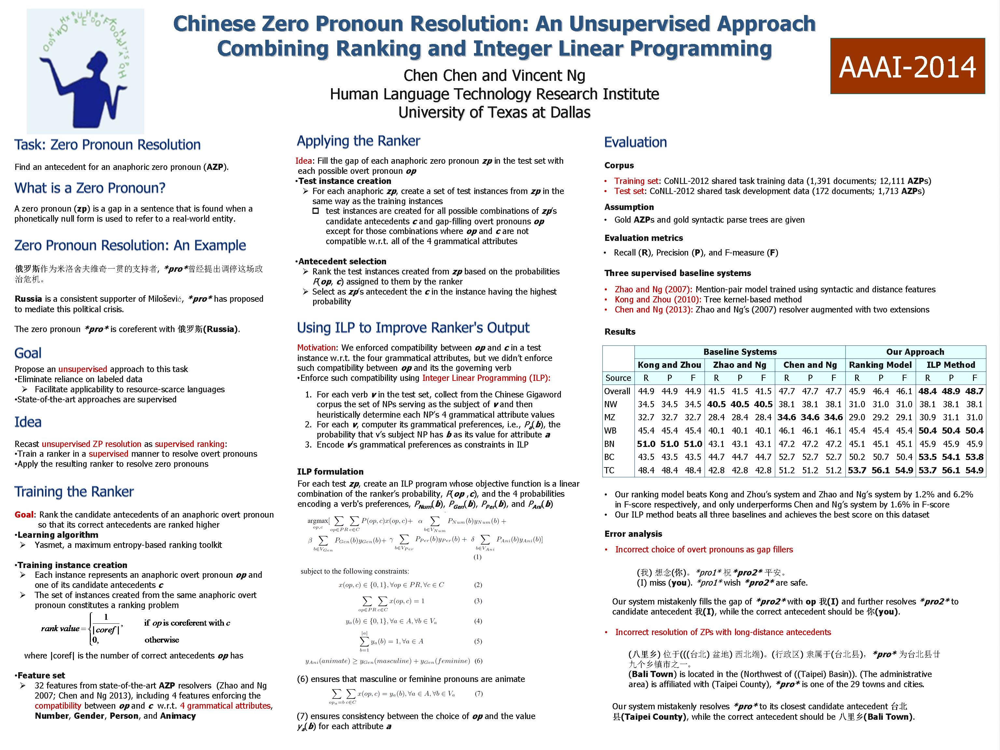

Chinese Zero Pronoun Resolution: An Unsupervised Approach Combining Ranking and Integer Linear Programming
Chen Chen and Vincent Ng.
Proceedings of the 28th AAAI Conference on Artificial Intelligence, pp. 1622--1628, 2014.
Click here for the
PDF version.
Abstract
State-of-the-art approaches to Chinese zero pronoun resolution are supervised,
requiring training documents with manually resolved zero pronouns.
To eliminate the reliance on annotated data,
we propose an unsupervised approach to this task.
Underlying our approach is the novel idea of employing a model trained on
manually resolved overt pronouns to resolve zero pronouns.
Experimental results on the OntoNotes 5.0 corpus are encouraging: our
unsupervised model surpasses its supervised counterparts in performance.
BibTeX entry
@InProceedings{Chen+Ng:14c,
author = {Chen Chen and Vincent Ng},
title = {Chinese Zero Pronoun Resolution: A Unsupervised Approach Combining Rankig and Integer Linear Programming},
booktitle = {Proceedings of the 28th AAAI Conference on Artificial Intelligence},
pages = {1622--1628},
year = 2014}
